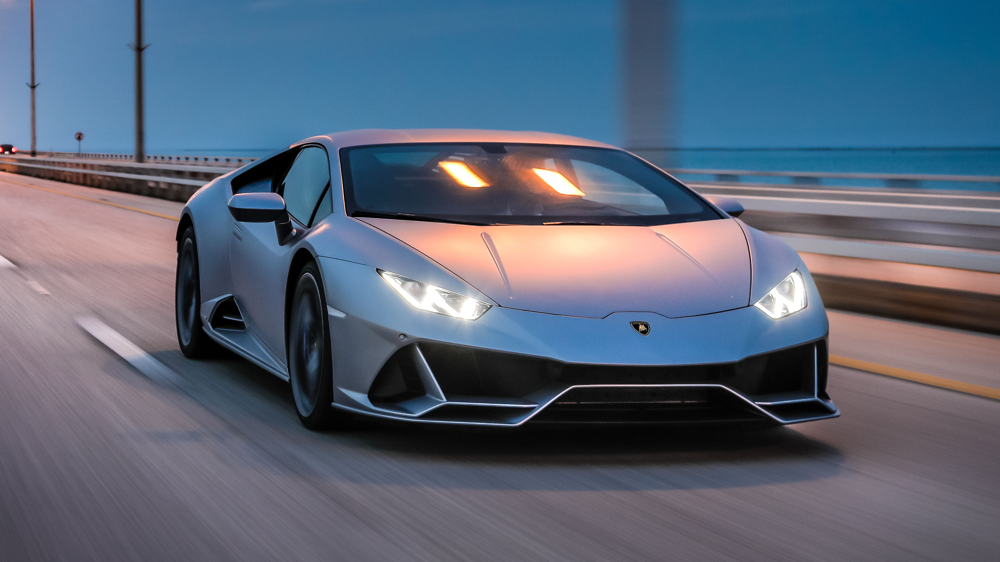

La tercera generación presumía de un estilo todavía más agresivo y comenzaba a dar pie a los trazos característicos del Supra,
con una caída en el pilar C muy pronunciada y toldo removible para dar un aspecto similar al Porsche Targa. Seguían
optando por las mismas transmisiones que en las generaciones pasadas.
$15,850
Jeep® Grand Cherokee 2024
el mejor SUV, con características avanzadas de seguridad, capacidad todoterreno y comodidad.
Con una gama de llamativas opciones de rines disponibles, incluidos los rines de aluminio pulido de 21 pulgadas para el
Grand Cherokee L (de 3 filas), incluso la planta baja del Grand Cherokee se eleva.
$1,452,000
Yamaha r3 300 2022
El mundo R te está llamando. Y cuando veas todo lo que la R3 tiene para ofrecer, sabrás que este es tu tipo de moto ideal.
Su motor de 321 cc de altas revoluciones ofrece una aceleración excepcional y su calidad, líder en su clase, el esquema
de color Icon Blue de última generación y el estilo agresivo confirman a la R3 como la Supersport ligera definitiva de Yamaha.
$7,157
Hachi Roku 86
El AE86, más conocido como "Hachi-Roku" es el último Corolla de tracción trasera que, combinado con su bajo peso y
un potente motor, se volvió muy popular en Japón donde el coche es altamente maniobrable en las apretadas curvas de
las carreteras de montaña.
$27,000

Lamborghini Huracán EVO
El Huracán EVO es la evolución del Lamborghini con motor V10 más exitoso de todos los tiempos.
Fruto de la puesta a punto y el perfeccionamiento de las características existentes, combinadas con nuevas soluciones
de diseño que aumentan el rendimiento, el coche destaca por su capacidad de anticiparse y atender al comportamiento,
las expectativas y los deseos del conductor.
$230,775
Nissan Skyline R34
El Nissan Skyline GT-R es un deportivo japonés basado en la gama Nissan Skyline.
Los primeros coches denominados "Skyline GT-R" se produjeron entre 1969 y 1972 con el código de modelo KPGC10
y tuvieron éxito en las carreras de turismos japonesas.